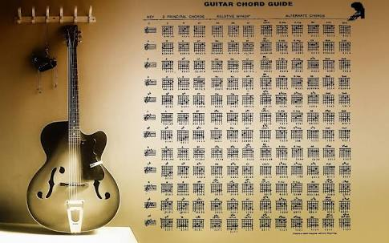

Guitar tab or tablature is a very popular method of notating guitar music. What makes tab so popular is that, once you get the hang of it, it is very easy to read. In order to understand tab, you need to visualize a guitar neck as if you are playing the guitar and looking down on the neck. Tab consists of 6 horizontal lines that represent the strings of the guitar. The thickest string being the bottom most line and the thinnest string being the topmost. Numbers are then placed on these lines to represent finger positions on the guitar fret board. If you read the diagram below you would play this on a guitar by putting your finger just behind the 2nd fret on the 5th string, then you would play the note at the 4th fret, then again on the 2nd fret. The ‘zero’ represents playing an open string. As musical notes this would read as follows B C# B A.

B|-1-1-0-1-0------
G|-----------2-2--
Baatein Kuch Ankahee Si
G|-0-2-0-----------0-
D|-------3-3–3-2-3---
Kuchh Ansuni Si Hone Lagi
B|-1-1-0-1-0------
G|-----------2-2--
Kaabu Dil Pe Raha Na
G|-0-2-0-----------0-
D|-------3-3–3-2-3---
Hasti Hamaari Khone Lagi
E|-0-----0-1--0--0--0--0-----0-1-
B|---1-3-----------3--3---1-3----
Wo Wo O O O O O...
E|-0-0---0------
B|-----3----3-1-
Shaayad Yahi Hai Pyaar...
Rest Is Same...
B|————0-0———–
G|-1—1-2——–2-1-2–
Hum, rahen ya na rahen kal
B|———-2-2-0—–0–
G|-2-2-2———-2——
Kal yaad aayenge ke ye pal
B|—————0-0———–
G|-1——1-2——–2-1-2–
D|—2————————-
Pal, ye hain pyar ke pal
B|———-2-2-0—–0–
G|-2-2-2———-2——
Chal, aa mere sang chal
E|-0—–2————0—–
B|—-4—–0—2-4——–
G|————————2–
Chal, soche kya Chhoti si
B|—-0-2—–0–
G|-2——-2—–
hai zindagi
E|-0—–2————0—–
B|—-4—–0—2-4——–
G|————————2–
Kal, mil jaaye to hogi
B|—-0-2—–0–
G|-2——-2—–
khush naseebi
B|———–0-0——0—-0————
G|-1—1-2——2-1—-1—-2-1——
D|————————————2–
Hum rahen ya na rahen yaad aayenge ye pal
E|————0————-0–
B|-4-4-4-4—–4-4-4-4—–
Shaam ka aanchal, odh ke aayee
B|-2-2-2-2-0-2-4-0-
dekho woh raat suhani
E|————0————-0–
B|-4-4-4-4—–4-4-4-4—–
Aa likh dein hum dono milke
B|-2-2-2-2-0-2-4-0-
Apni ye prem kahani
B|———–0-0——0—-0————
G|-1—1-2——2-1—-1—-2-1——
D|————————————2–
Hum rahen ya na rahen yaad aayenge ye pal...
Rest Is Same...